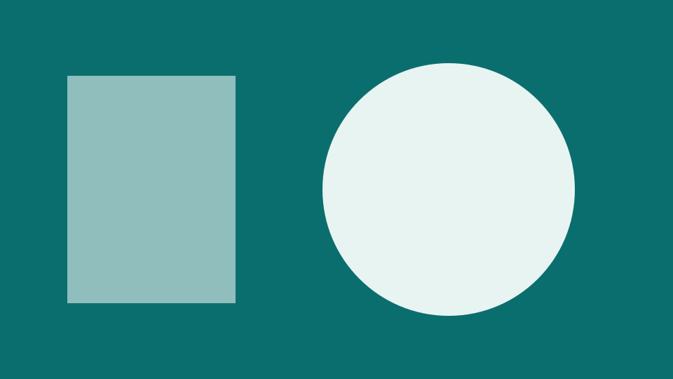
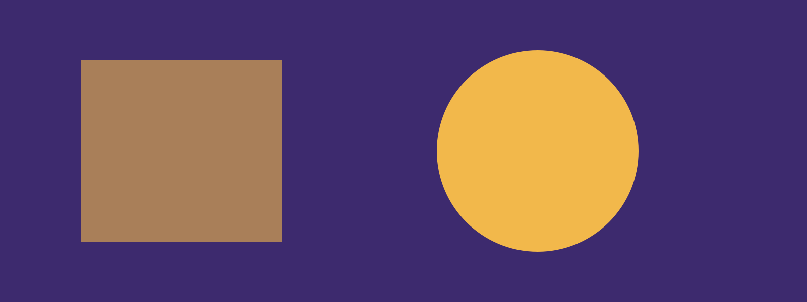
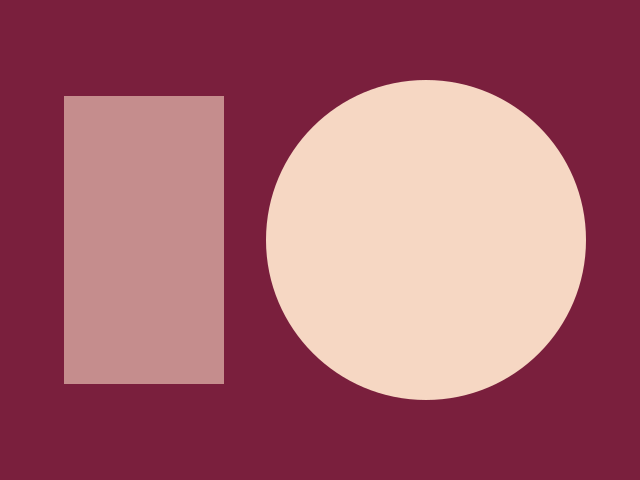
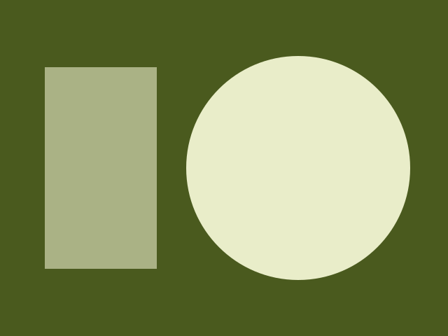
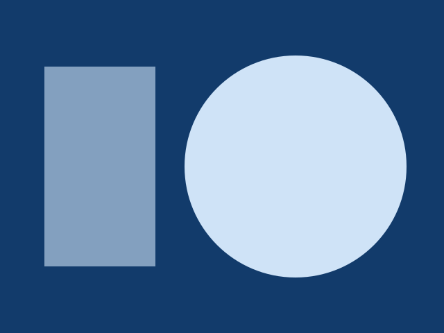

<link rel="stylesheet" href="./specimen/examples.css" />
<section class="cap-specimen" aria-labelledby="s-text">
  <h2 id="s-text">Text, lists, quotes and footnotes</h2>
  <p class="cap-muted">Headings carry a link to themselves, shown on hover and focus. Inline marks are the elements raw HTML would need.</p>
  <article data-context="prose" id="pb-text">
<h2 id="writing-for-every-site">Writing for every site<a class="heading-anchor" aria-label="Link to section: Writing for every site" href="#writing-for-every-site">#</a></h2>
<p>A paragraph with <strong>strong</strong>, <em>emphasis</em>, <code>inline code</code>, a <a href="https://example.com/network">link to the network</a> and a footnote.<sup><a href="#user-content-fn-1" id="user-content-fnref-1" data-footnote-ref aria-describedby="footnote-label">1</a></sup> Press <kbd>Ctrl</kbd> and <kbd>K</kbd> to search, read <abbr title="Model Context Protocol">MCP</abbr> as a protocol, <mark>mark a phrase</mark>, and write H<sub>2</sub>O or x<sup>2</sup>.</p>
<ul>
<li>Drafts live in Carrel.</li>
<li>Each site renders with Prelum.
<ul>
<li>Nested items keep their rhythm.</li>
</ul>
</li>
</ul>
<ol>
<li>Write the post.</li>
<li>Check it.</li>
</ol>
<ul class="contains-task-list">
<li class="task-list-item"><label><input type="checkbox" checked disabled> Alt text on every image</label></li>
<li class="task-list-item"><label><input type="checkbox" disabled> A transcript for the talk</label></li>
</ul>
<blockquote>
<p>A quotation set off from the text, in the muted color, with a rule at its start.</p>
</blockquote>
<h3 id="a-smaller-heading">A smaller heading<a class="heading-anchor" aria-label="Link to section: A smaller heading" href="#a-smaller-heading">#</a></h3>
<p>A third level is set in the interface face, as are the levels below it.</p>
<hr>
<section data-footnotes class="footnotes"><h2 class="sr-only" id="footnote-label">Footnotes<a class="heading-anchor" aria-label="Link to section: Footnotes" href="#footnote-label">#</a></h2>
<ol>
<li id="user-content-fn-1">
<p>A footnote, with a link back to where it was cited. <a href="#user-content-fnref-1" data-footnote-backref="" aria-label="Back to reference 1" class="data-footnote-backref">↩</a></p>
</li>
</ol>
</section>
  </article>
</section>
<section class="cap-specimen" aria-labelledby="s-table">
  <h2 id="s-table">Table</h2>
  <p class="cap-muted">A table scrolls inside its own box, which takes keyboard focus; numbers align right in tabular figures.</p>
  <article data-context="prose" id="pb-table">
<div class="table-scroll" tabindex="0"><table>
<thead>
<tr>
<th>Site</th>
<th align="right">Posts</th>
<th align="right">Words</th>
<th>Last published</th>
</tr>
</thead>
<tbody>
<tr>
<td>dustinedwards.info</td>
<td align="right">42</td>
<td align="right">61,200</td>
<td>2026-10-30</td>
</tr>
<tr>
<td>germomics.com</td>
<td align="right">18</td>
<td align="right">24,350</td>
<td>2026-10-28</td>
</tr>
<tr>
<td>julieedwards.info</td>
<td align="right">7</td>
<td align="right">9,810</td>
<td>2026-10-12</td>
</tr>
</tbody>
</table></div>
  </article>
</section>
<section class="cap-specimen" aria-labelledby="s-callouts">
  <h2 id="s-callouts">Callouts</h2>
  <p class="cap-muted">GitHub's five alerts. The title word carries the kind; the color only repeats it.</p>
  <article data-context="prose" id="pb-callouts">
<div class="callout callout-note" role="note">
<p class="callout-title">Note</p>
<p>A note with <strong>strong</strong> text and a <a href="https://example.com/notes">link</a>.</p>
</div>
<div class="callout callout-tip" role="note">
<p class="callout-title">Tip</p>
<p>Write the alt text while the picture is in front of you.</p>
</div>
<div class="callout callout-important" role="note">
<p class="callout-title">Important</p>
<p>Every episode has a transcript.</p>
</div>
<div class="callout callout-warning" role="note">
<p class="callout-title">Read this first</p>
<p>A warning with its own title.</p>
</div>
<div class="callout callout-caution" role="note">
<p class="callout-title">Caution</p>
<p>Deleting a draft cannot be undone.</p>
</div>
  </article>
</section>
<section class="cap-specimen" aria-labelledby="s-figures">
  <h2 id="s-figures">Images, figures and a gallery</h2>
  <p class="cap-muted">An image links to its original. A figure has a caption and a credit; width=wide leaves the measure. A gallery crops two to nine images to one frame.</p>
  <article data-context="prose" id="pb-figures">
<p><a class="image-link" href="./specimen/tile.svg"></a></p>
<figure class="width-wide"><a class="image-link" href="./specimen/wide.svg"></a><figcaption><p>A wide figure with a caption and its credit.</p><span class="figure-credit">Photo: Sample Archive</span></figcaption></figure>
<figure class="gallery"><ul class="gallery-grid"><li><a class="image-link" href="./specimen/one.svg"></a></li><li><a class="image-link" href="./specimen/two.svg"></a></li><li><a class="image-link" href="./specimen/three.svg"></a></li></ul><figcaption>Three pictures side by side.</figcaption></figure>
  </article>
</section>
<section class="cap-specimen" aria-labelledby="s-media">
  <h2 id="s-media">Video, audio and an embed</h2>
  <p class="cap-muted">The native players at the column's width. An embed makes no request to the service until the reader clicks; until then it is a card that names the service and the title.</p>
  <article data-context="prose" id="pb-media">
<figure class="media media-video"><video src="/media/sample-demo.mp4" poster="./specimen/poster.svg" controls preload="metadata" playsinline aria-label="A short demo"><track kind="captions" src="/media/sample-demo.vtt" srclang="en" label="English" default></video><figcaption><p>What the demo shows.</p></figcaption></figure>
<figure class="media media-audio"><audio src="/media/sample-talk.mp3" controls preload="metadata" aria-label="A talk on phages"></audio><p class="media-transcript"><a href="/writing/talk-transcript">Transcript: A talk on phages</a></p></figure>
<figure class="embed embed-youtube"><a class="embed-link" href="https://www.youtube.com/watch?v=dQw4w9WgXcQ" data-embed-src="https://www.youtube-nocookie.com/embed/dQw4w9WgXcQ?autoplay=1" data-embed-title="A keynote on phage therapy">Watch on YouTube: A keynote on phage therapy</a></figure>
  </article>
</section>
<section class="cap-specimen" aria-labelledby="s-links">
  <h2 id="s-links">Button, bookmark, details and FAQ</h2>
  <p class="cap-muted">A button link is the primary button at a full control's height. A bookmark is a link card. Details and the FAQ work with scripts off.</p>
  <article data-context="prose" id="pb-links">
<p class="button-row"><a href="/join" class="button">Join the list</a></p>
<figure class="bookmark"><a href="https://example.com/shared" class="bookmark-link"><span class="bookmark-title">How the network shares its code</span><span class="bookmark-description">One package for every site’s publishing.</span><span class="bookmark-host">example.com</span></a></figure>
<details class="post-details"><summary>Why the sources are listed</summary><p>Each claim links its source, so a reader can check it.</p></details>
<dl class="faq"><div class="faq-item"><dt>Where do drafts live?</dt><dd>In Carrel, beside every earlier version.</dd></div><div class="faq-item"><dt>Who publishes?</dt><dd>The owner, or an author for their own posts.</dd></div></dl>
  </article>
</section>
<section class="cap-specimen" aria-labelledby="s-code">
  <h2 id="s-code">Code</h2>
  <p class="cap-muted">A titled block, and a plain one. Sites that highlight get shiki's two themes, picked by the page's theme, and a marked line has a rule at its start as well as a band. The space at the top of each block is kept for the language name and the Copy button that render/enhance adds, so the page does not shift when they arrive.</p>
  <article data-context="prose" id="pb-code">
<figure class="code-frame"><figcaption class="code-title">render.ts</figcaption><pre><code class="language-ts">import { render } from "@drdustinedwards/site-helpers/render";
const { html } = await render({ file, body, resolveImage });
export default html;
</code></pre></figure>
<pre><code>plain code, no language
</code></pre>
  </article>
</section>
<section class="cap-specimen" aria-labelledby="s-editorial">
  <h2 id="s-editorial">The editorial pack</h2>
  <p class="cap-muted">A side note and a pull quote. A color swatch is in Prelum's own specimen: its chip color is a style attribute, which this site's policy refuses.</p>
  <article data-context="prose" id="pb-editorial">
<p>Prelum’s editorial pack adds a few blocks for long essays.</p>
<aside class="post-note" id="sn-1"><b class="post-note-kind">Aside</b><p>The side note sits beside the paragraph it explains.</p></aside>
<div><p>A pull quote repeats one line from the text, larger.</p></div>
  </article>
</section>
